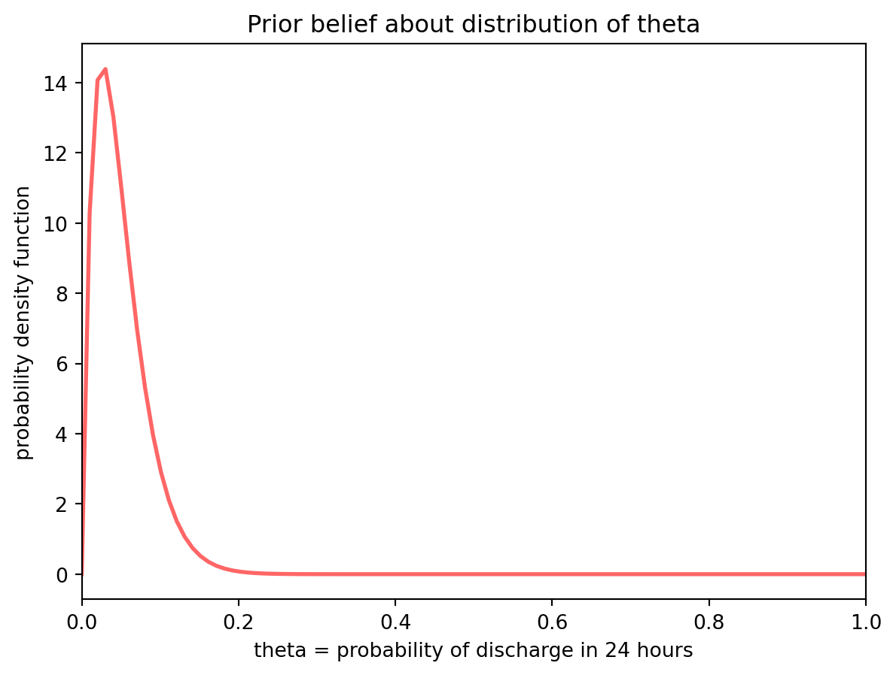
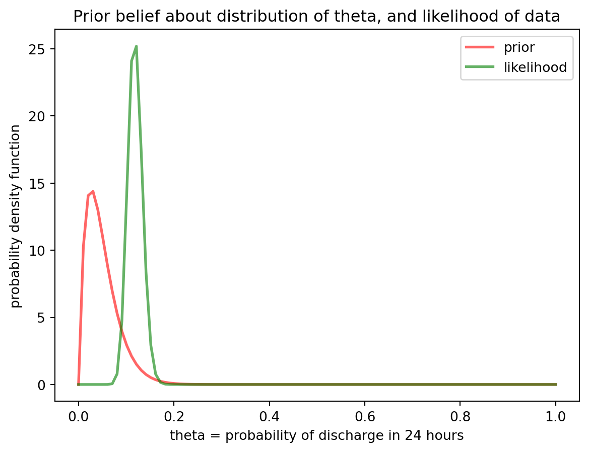
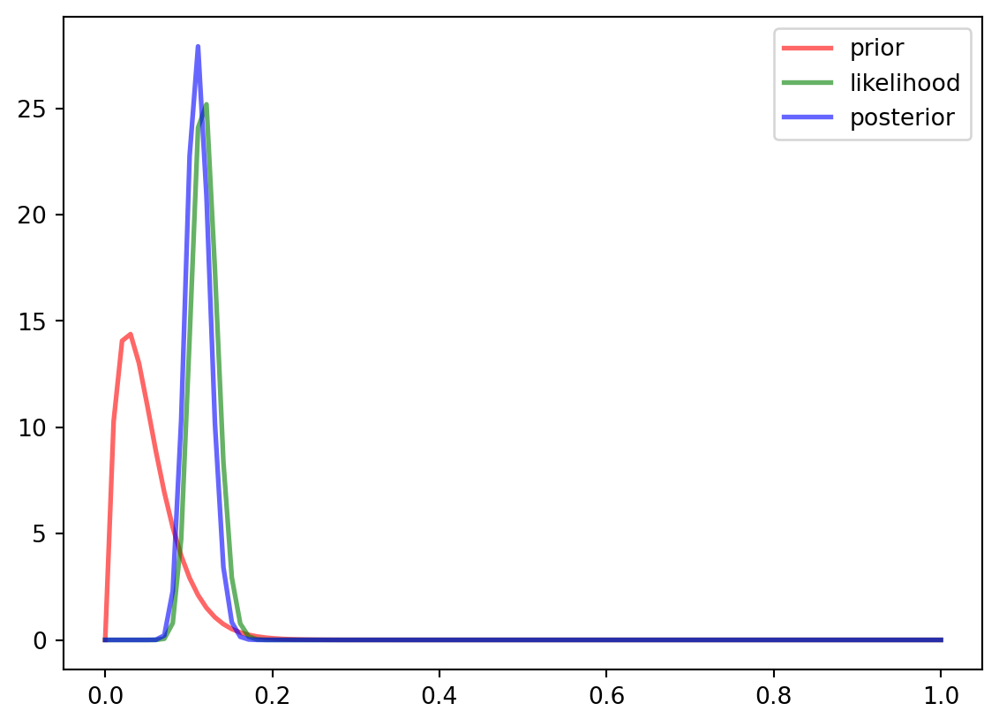

Our goal is to develop a Bayesian model to predict a patient’s probability of being discharged in the next 24 hours.
Note that, for now in this first attempt, I’m assuming you have some prior knowledge of Bayesian statistics.
Here are three initial steps I think we need to do:
Decide on our “prior” probability and express it as a distribution
Identify some data we can use for the “likelihood”. This can be synthetic to start with
Develop a posterior distribution from the prior and likelihood.
1. Prior probability
We express the probability of discharge as \(\theta\). Our prior belief about \(\theta\) could be that it follows a beta distribution which is expressed as follows:
\[
P(\theta) = Beta(\alpha,\beta)
\tag{1}\]
Let’s say we know that 5% of patients are discharged on any given day. Therefore we’d like the expected value of our Beta distribution to be at 0.05. The expected value of a Beta distribution is given by
\[
Exp(\theta) = \frac{\alpha}{\alpha + \beta}
\]
If we set \(\alpha\) to be 2 and \(\beta\) to be 38, we’ll get an expected value of 0.05
\[
P(\theta) = Beta(2,38)
\tag{2}\]
Plotting this:
Code
import numpy as npimport matplotlib.pyplot as pltfrom scipy.stats import betaa, b =2, 38fig, ax = plt.subplots(1, 1)theta = np.linspace(0, 1, 100)ax.plot(theta, beta.pdf(theta, a, b),'r-', lw=2, alpha=0.6, label='beta pdf')ax.set_ylabel('probability density function')ax.set_xlabel('theta = probability of discharge in 24 hours')ax.set_title('Prior belief about distribution of theta')plt.xlim([0, 1])plt.show()

Prior distribution
2. Identify some data we can use for the “likelihood”
Now let’s look at some data. This will constitute our likelihood. First let’s read it in from a saved anonymised database
Code
import sqlalchemy as saimport pandas as pdimport ossqlite_engine = sa.create_engine('sqlite:///../../data/dummy.db')df = pd.read_sql_query("SELECT * from discharges", sqlite_engine)df.head()# Let N be the number of patients observedN = df.shape[0]# Let X be the number of patients who were discharged in 24 hoursX = df[df.hours_to_discharge <=24].shape[0]print("Number of people discharged in 24 hours: "+str(X))print("Total number of people observed: "+str(N))
Number of people discharged in 24 hours: 52
Total number of people observed: 444
We observe that 52 patients out of 444 were discharged. This provides our likelihood. We can express our data as a binomial distribution where we do N trials with our unknown probability \(\theta\) and return the result we are looking for (ie patient was discharged) X times of the N trials.
\[
P(data) = Binomial(N, \theta)
\tag{3}\]
The binomial distribution can be expanded as shown here, where \({N \choose X}\) is the notation for N Choose X (a way of expressing the number of different ways, or permutations, that you could get a result of X discharged patients when starting with N patients in total)
import pandas as pdimport os#| label: likelihood#| fig-cap: "Likelihood distribution"import numpy as npimport matplotlib.pyplot as pltfrom scipy.stats import binomfrom math import factorial as factN_choose_X = fact(N)/(fact(X)*fact(N-X))fig, ax = plt.subplots(1, 1)line1, = ax.plot(theta, beta.pdf(theta, a, b),'r-', lw=2, alpha=0.6, label='prior')line2, = ax.plot(theta, N_choose_X*theta**X*(1-theta)**(N-X)*N,'g-', lw=2, alpha=0.6, label='likelihood')ax.legend(handles=[line1, line2])ax.set_ylabel('probability density function')ax.set_xlabel('theta = probability of discharge in 24 hours')ax.set_title('Prior belief about distribution of theta, and likelihood of data')plt.show()

Now that we have seen the data, we see that our original prior was too pessimistic. A higher proportion of patients are discharged each day than we expected.
3. Develop a posterior distribution from the prior and likelihood
We know from Bayesian statistics that, if you have a beta prior, and binomial likelihood then you can derive the posterior distribution from these without doing any complicated maths.
Specifically, our posterior can be expressed as a beta distribution, in which we can bring in the values of \(\theta\) from our prior, and values of N and X from our likelihood
\[
P(\theta | data) = \frac{\theta^{(\alpha + X -1)}(1 - \theta)^{N + \beta - X -1}}{B (\alpha + X -1, N + \beta - X -1)}
\] The denominator above is referred to as a normalising constant. It looks confusing, but the key thing to note that it doesn’t contain any values of \(\theta\), making it simpler to work out than when you have to integrate over all values of \(\theta\).
We can now draw our posterior distribution (in blue)
Code
import numpy as npimport matplotlib.pyplot as pltfrom scipy.stats import betaa_prime, b_prime =2+ X , 38+ N - Xfig, ax = plt.subplots(1, 1)line1, = ax.plot(theta, beta.pdf(theta, a, b),'r-', lw=2, alpha=0.6, label='prior')line2, = ax.plot(theta, N_choose_X*theta**X*(1-theta)**(N-X)*N,'g-', lw=2, alpha=0.6, label='likelihood')line3, = ax.plot(theta, beta.pdf(theta, a_prime, b_prime),'b-', lw=2, alpha=0.6, label='posterior')ax.legend(handles=[line1, line2, line3])plt.show()

Posterior distribution
The posterior predictive distribution is in a tighter range (a taller, slimmer peak) than the prior predictive distribution, and is overwhelmingly determined by the data, rather than the prior. This is the case with Bayesian statistics: as you get more data, the prior beliefs become less important.